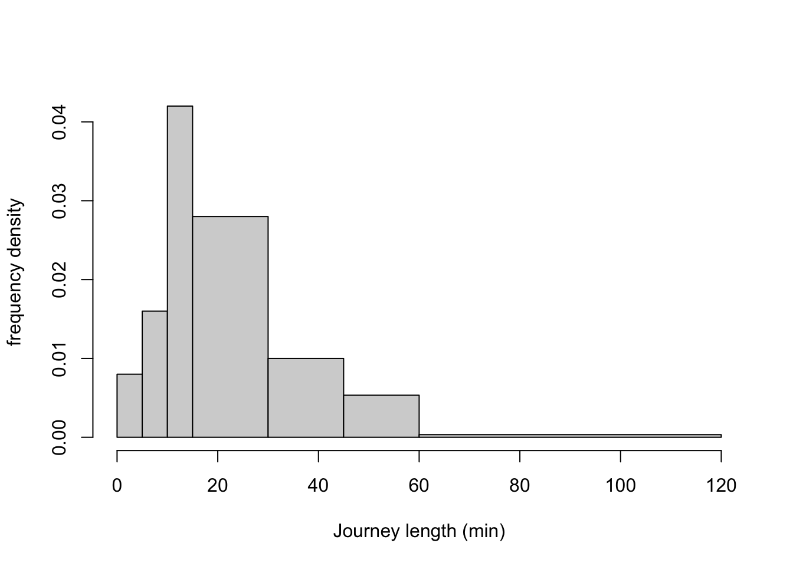
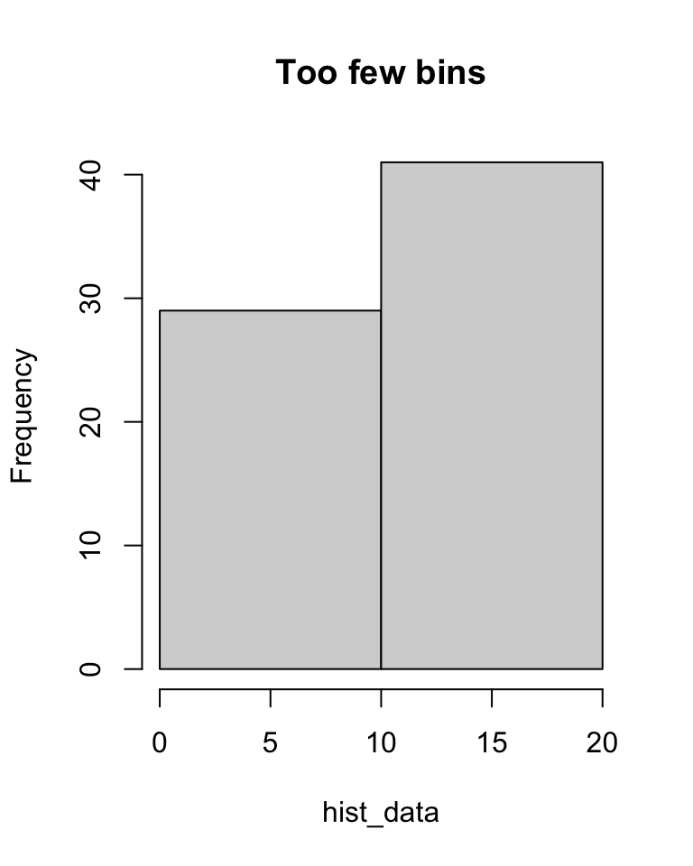
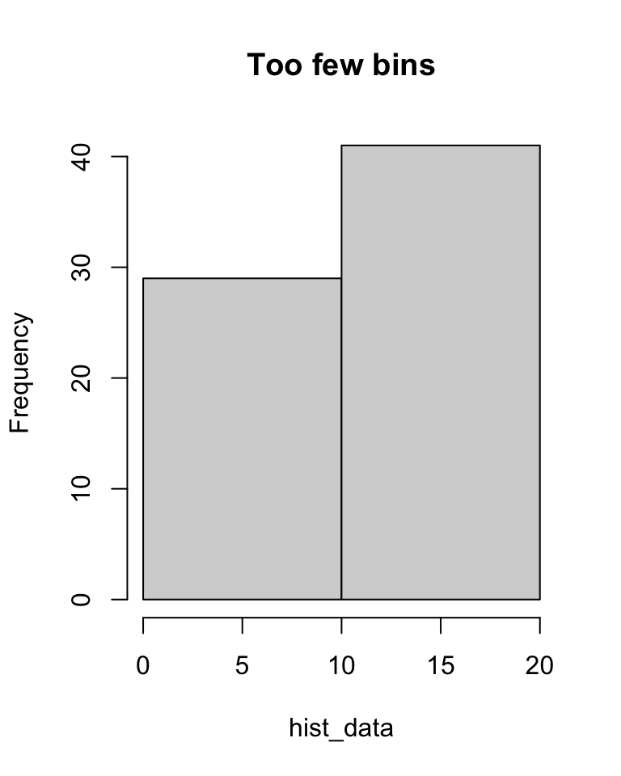

Lecture 2 Data visualisations
Data visualisations – drawings or graphs based on data – can help us to understand the “shape” of a dataset as part of exploratory data anlaysis. In this lecture, we’ll look at three types of data visualisation.
2.1 Boxplots
A boxplot is a useful way to illustrate numerical data. It can be easier to tell the difference between different data sets “by eye” when looking at a boxplot, rather than examining raw summary statistics.
A boxplot is drawn as follows:
- The vertical axis represents the data values.
- Draw a box from the lower quartile \(q(\frac14)\) to the median \(q(\frac12)\).
- Draw another box on top of this from the median \(q(\frac12)\) to the upper quartile \(q(\frac34)\). Note that size of these two boxes put together is the interquartile range.
- Decide which datapoints are outliers, and plot these with circles. (The R default is that any data point less than \(q(\frac14) - 1.5 \times \text{IQR}\) or greater than \(q(\frac34) + 1.5 \times \text{IQR}\) is an outlier.)
- Out from the two previous boxes, draw “whiskers” to the minimum and maximum non-outlier datapoints.

When we have multiple datasets, drawing boxplots next to each other can help us to compare the datasets. Here are two boxplots from the July and October temperature data we used in the last lecture. What do you conclude about the data from these boxplots?
boxplot(jul$temp, oct$temp,
names = c("July", "October"),
ylab = "Daily maximum temperature (degrees C) in Leeds"
)(And yes, I did check the outlier to make sure it was a genuine datapoint.)
2.2 Histograms
Often when collecting data, we don’t collect exact data, but rather collect data clumped into “bins”. For example, suppose a student wished to use a questionnaire to collect data on how long it takes people to reach campus from home; they might not ask “Exactly how long does it take?”, but rather give a choice of tick boxes: “0–5 minutes”, “5–10 minutes”, and so on.
Consider the following binned data, from \(n = 100\) students:
| Time | Frequency | Relative frequency |
|---|---|---|
| 0–5 minutes | 4 | 0.04 |
| 5–10 minutes | 8 | 0.08 |
| 10–15 minutes | 21 | 0.21 |
| 15–30 minutes | 42 | 0.42 |
| 30–45 minutes | 15 | 0.15 |
| 45–60 minutes | 8 | 0.08 |
| 60–120 minutes | 2 | 0.02 |
| Total | 100 | 1 |
Here the frequency \(f_j\) of bin \(j\) is simply the number of observations in that bin; so, for example, 42 students had journey lengths of between 15 and 30 minutes. The relative frequency of bin \(j\) is \(f_j/n\); that is, the proportion of the observations in that bin.
Which bin would you say is the most popular – that is, the “modal” bin? The bin with the most observations in it is the “15–30 minute” bin. But this bin covers 15 minutes, while some of the other bins only cover 5 minutes. It would be a fairer comparison to look at the frequency density: the relative frequency divided by the size of the bin.
| Time | Frequency | Relative frequency | Frequency density |
|---|---|---|---|
| 0–5 minutes | 4 | 0.04 | 0.008 |
| 5–10 minutes | 8 | 0.08 | 0.016 |
| 10–15 minutes | 21 | 0.21 | 0.042 |
| 15–30 minutes | 42 | 0.42 | 0.028 |
| 30–45 minutes | 15 | 0.15 | 0.010 |
| 45–60 minutes | 8 | 0.08 | 0.005 |
| 60–120 minutes | 2 | 0.02 | 0.0003 |
| Total | 100 | 1 |
In the first row, for example, the relative frequency is 0.04 and the size of the bin is 5 minutes, so the frequency density is \(0.04/5 = 0.008\). We now see that the modal bin – the bin with the highest frequency density – is in fact the “10–15 minutes” bin. This bin has somewhat fewer datapoints that the “15–30 minutes” bin, but they’re squashed into a much smaller bin.
Data in bins can be illustrated with a histogram. A histogram has the measurement on the x-axis, with one bar across the width of each bin, where bars are drawn up to the height of the corresponding frequency density. Note that this means that the area of the bar is exactly the relative frequency of the corresponding bin.
If all the bins are the same width, frequency density is directly proportional to frequency and to relative frequency, so it can be clearer use one of those as the y-axis instead in the equal-width-bins case.
Here is a histogram for our journey-time data:
journeys <- read.csv("https://mpaldridge.github.io/math1710/data/journeys.csv")
bins <- c(0, 5, 10, 15, 30, 45, 60, 120)
hist(journeys$midpoint, breaks = bins,
xlab = "Journey length (min)", ylab = "frequency density", main = ""
)
Often we draw histograms because the data was collected in bins in the first place. But even when we have exact data, we might choose to divide it into bins for the purposes of drawing a histogram. In this case we have to decide where to put the “breaks” between the bins. Too many breaks too close together, and the small number of observations in each bin will give “noisy” results (see left); too few breaks too far apart, and the wide bins will mean we lose detail (see right).
set.seed(2172)
hist_data <- c(rnorm(30, 8, 2), rnorm(40, 12, 3)) # Some fake data
hist(hist_data, breaks = 40, main = "Too many bins")
hist(hist_data, breaks = 2, main = "Too few bins") 

We can also calculate some summary statistics even when we have binned data. We mentioned the mode earlier, where the modal bin is the bin of highest frequency density.
What is the median journey length? Well, we don’t know exactly, but \(0.04 + 0.08 + 0.21\) (the first three bins) is less than 0.5, while \(0.04 + 0.08 + 0.21 + 0.42\) (including the fourth bin) is greater than 0.5. So we know that the median student is in the fourth bin, the “15–30 minute” bin, and we can say that the median journey length is between 15 and 30 minutes.
Since we don’t have the exact data, it’s not possible to exactly calculate the mean and variance. However, we can often get a good estimate by assuming that each observation was in fact right in the centre of its bin. So, for example, we could assume that all 4 observations in the “0–5 minutes” bin were journeys of exactly 2.5 minutes. Of course, this isn’t true (or is highly unlikely to be true), but we can often get a good approximation this way.
For our journey-time data, our approximation of the mean would be \[ \bar x = \frac{1}{100} \big(4\times 2.5 + 8 \times 7.5 + \cdots + 2\times90) = 24.4 . \] More generally, if \(m_j\) is the midpoint of bin \(j\) and \(f_j\) its frequency, then we can calculate the binned mean and binned variance by \[\begin{align*} \bar x &= \frac{1}{n} \sum_j f_j m_j \\ s^2_x &= \frac{1}{n-1} \sum_j f_j (m_j - \bar x)^2 \end{align*}\]
2.3 Scatterplots
Often, more than one piece of data is collected from each subject, and we wish to compare that data, to see if there is a relationship between the variables.
For example, we could take \(n\) second-year maths students, and for each student \(i\), collect their mark \(x_i\) in MATH1710 and their mark \(y_i\) in MATH1712. This gives is two “paired” datasets, \(\mathbf x = (x_1, x_2, \dots, x_n)\) and \(\mathbf y = (y_1, y_2, \dots, y_n)\). We can calculate sample statistics of draw plots for \(\mathbf x\) and for \(\mathbf y\) individually. But we might also want to see if there is a relationship between \(\mathbf x\) and \(\mathbf y\): Do students with high marks in MATH1710 also get high marks in MATH1712?
A good way to visualise the relationship between two variables is to use a scatterplot. In a scatterplot, the \(i\)th data pair \((x_i, y_i)\) is illustrated with a mark (such as a circle or cross) whose x-coordinate has the value \(x_i\) and whose y-coordinate has the value \(y_i\).
In the following scatterplot, we have \(n = 50\) datapoints for the 50 US states; for each state \(i\), \(x_i\) is the Republican share of the vote in that state in the 2016 Trump–Clinton presidential election, and \(y_i\) is the Republican share of the vote in that state in the 2020 Trump–Biden election.
elections <- read.csv("https://mpaldridge.github.io/math1710/data/elections.csv")
plot(elections$X2016, elections$X2020,
col = "blue",
xlab = "Republican share of the two-party vote, 2016 (%)",
ylab = "Republican share of the two-party vote, 2020 (%)")
abline(h = 50, col = "grey")
abline(v = 50, col = "grey")
abline(0.195, 0.963, col = "red")
We see that there is a strong relationship between \(\mathbf x\) and \(\mathbf y\), with high values of \(x\) corresponding to high values of \(y\) and vice versa. Further, the points on the scatterplot lie very close to a straight line.
A useful summary statistic here is the correlation \[ r_{xy} = \frac{s_{xy}}{s_x s_y} , \] where \(s_{xy}\) is the sample covariance \[ s_{xy} = \frac{1}{n-1} \sum_{i=1}^n (x_i - \bar x)(y_i - \bar y) , \] and \(s_x = \sqrt{s_x^2}\) and \(s_y = \sqrt{s_y^2}\) are the standard deviations.
The correlation \(r_{xy}\) is always between \(-1\) and \(+1\). Values of \(r_{xy}\) near \(+1\) indicate that the scatterpoints are close to a straight line with an upward slope (big \(x\) = big \(y\)); values of \(r_{xy}\) near \(-1\) indicate that the scatterpoints are close to a straight line with a downward slope (big \(x\) = small \(y\)); and values of \(r_{xy}\) near 0 indicate that there is a weak linear relationship between \(x\) and \(y\).
For the elections data, the correlation is
cor(elections$X2016, elections$X2020)## [1] 0.9919659which, as we expected, is extremely high.